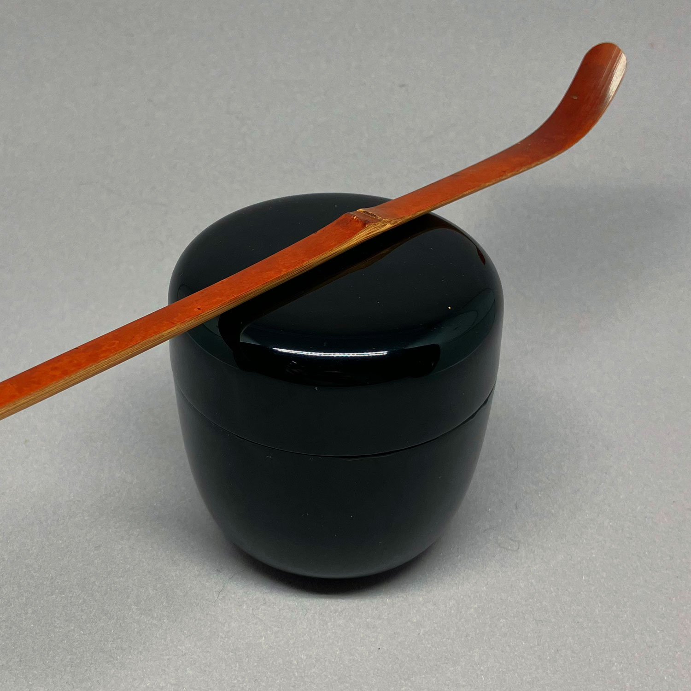
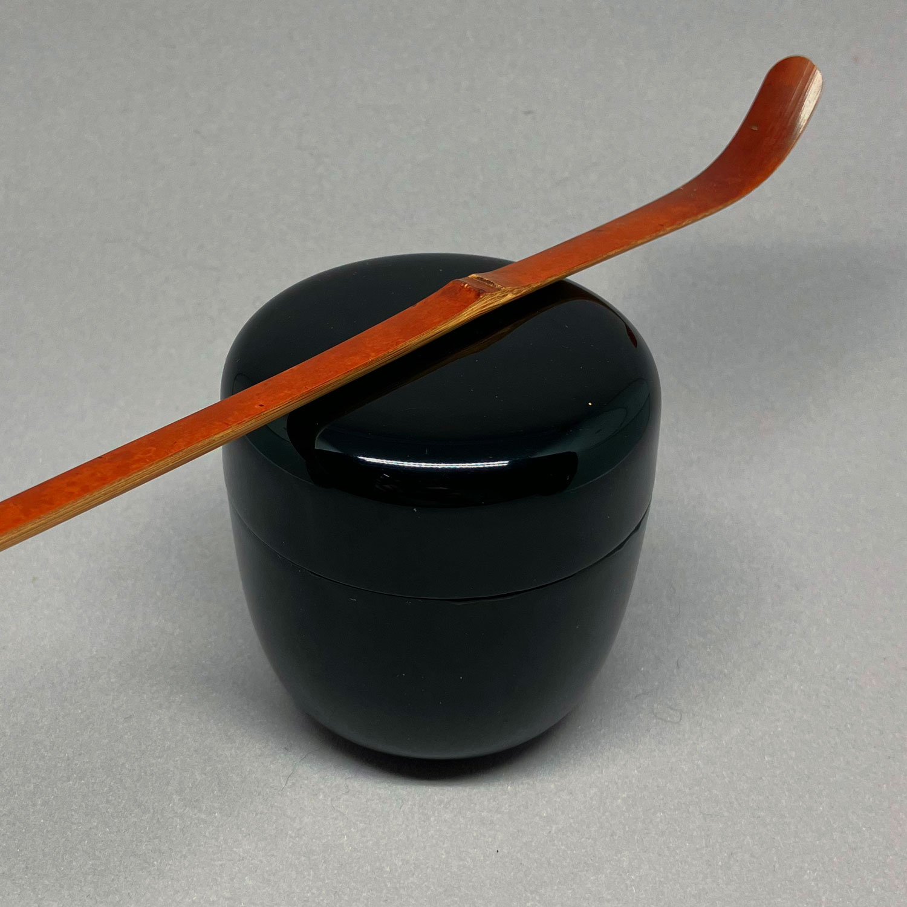

煮物碗
作家不明 50 CHF円窓山水紋
作家不明 40 CHF無感情
岡田三郎作 180 CHF
花散里
作家不明 80 CHF
 


花散里
この茶さじは煤けた竹から作られています。有名な源氏物語の第11章と同じ名前を共有しています：花散里、これは村に散らばる花々を意味します。この章では、源氏皇子が昔話をする雨の夏の午後を過ごし、橘と呼ばれる落ちた柑橘の花の香りを楽しんでいます。
この茶さじには同様の力と憂鬱さを見つけると思います。特に夏に適しており、紙箱入りです。
掲載されている価格は、上記の道具のみを含んでいます。写真に写っている他の道具はサイズ比較や説明のためのものです。
注文 (茶杓, 価格： 80 スイスフラン) 閉じる
早乙女
岡田三郎作 180 CHF
早乙女
岡田三郎作伝統的に、早乙女は、日本の稲作サイクルにおいて重要な早い夏に田んぼで稲を植える女性を指します。稲を植える行為は農業にとって重要なだけでなく、日本の農業遺産を称える文化的儀式や祭りに浸透しています。
この茶杓は初夏のイメージと本質を喚起し、土地と季節の循環との関連を反映しています。この選択は、稲作者の労働と献身を尊重し、人間の活動と自然のリズムとの調和した関係を強調しています。
製作者は成功した銀行経営者であり、日本茶道の実践者でもありました。彼は多くの茶杓や竹製の器具を彫りましたが、特に古い寺院から入手した竹を使用していました。茶杓には作者の筒と紙箱が付属しています。
掲載されている価格は、上記の道具のみを含んでいます。写真に写っている他の道具はサイズ比較や説明のためのものです。
注文 (茶杓, 価格： 180 スイスフラン) 閉じる初笑
作家不明 40 CHF森林浴
作家不明 40 CHF
森林浴
これは、ノードの近くや底辺に興味深いディテールがある、シンプルな竹製の茶さじです。森林の中を散歩しているようなさわやかで優雅な感じがします。その名前、森林浴は、直訳するとforest bathing、あるいはより科学的にはsilvicotherapyとなります。人々は昔から森林の静かな静寂を楽しんできましたが、この用語は1980年代に人々が自然と再つながりしようとする動きから人気を集めました。
この視点からは、自然を楽しむ単純な意味だけでなく、人類が自然に与えた損害を取り消すための事業的欲望や奮闘も見つけることができます。紙箱付き。
掲載されている価格は、上記の道具のみを含んでいます。写真に写っている他の道具はサイズ比較や説明のためのものです。
注文 (茶杓, 価格： 40 スイスフラン) 閉じる